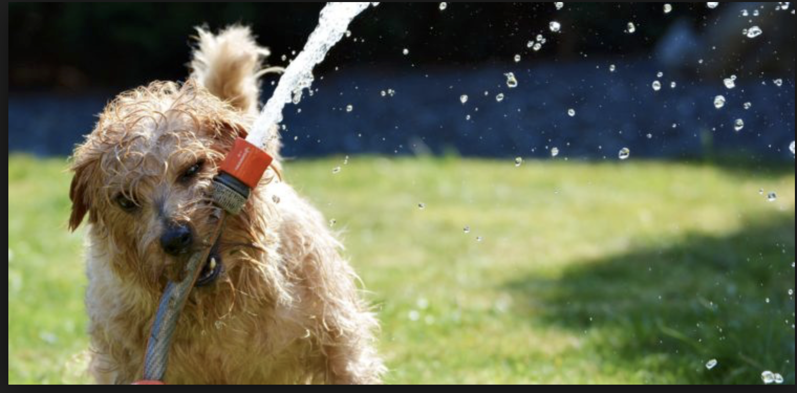

I ferien liker jeg å resie til varme steder hvor man kan bade, shoppe og slappe av. Det er alltid deilig å komme seg vekk, og få slappe av litt.
Når jeg er på ferie liker jeg å bli brun. Jeg pleier å sole meg hele dagen, og bader litt når jeg blir for varm. Ootd er bikini.
Jeg liker å dra på ferie med både venner og familie.
HEI, du ja! Titt need!! Se på denne søte hunden!:)



Trykk for å se min andre blogg
Det er flere ting å gjøre enn man tror, og jeg har laget en liste til deg som kanskje hjelper.
Trykk for å se min andre blogg